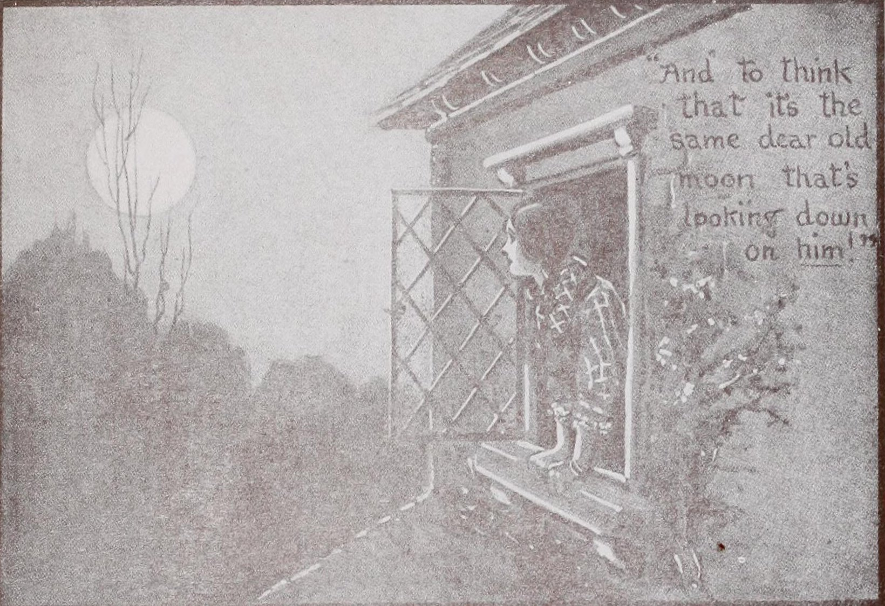
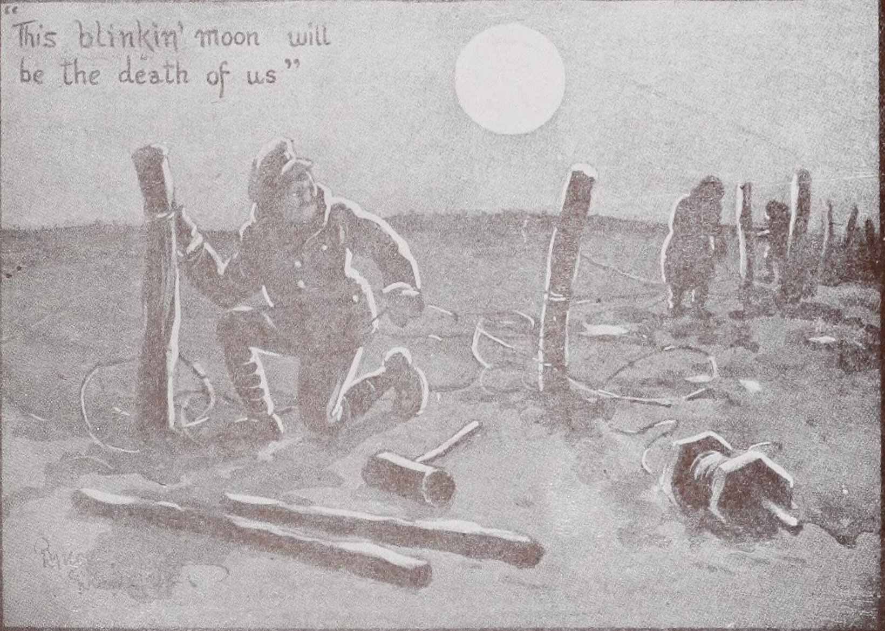
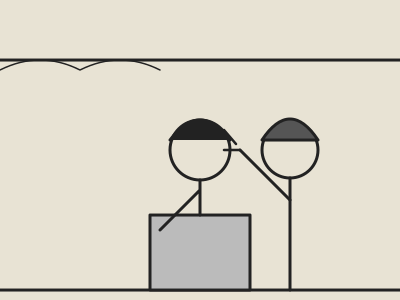
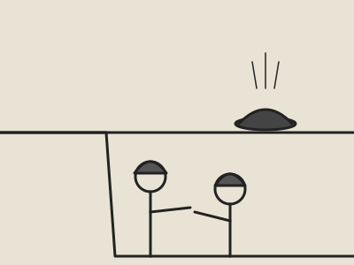
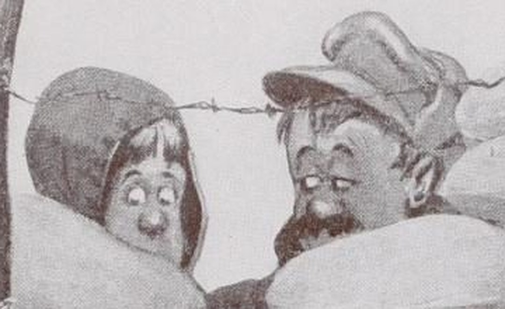
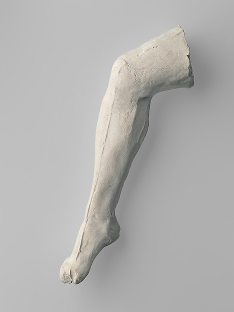
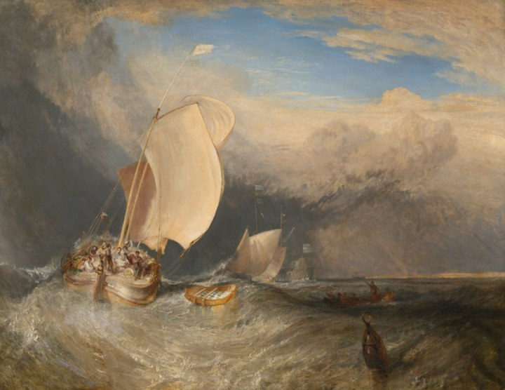

Plates Missing
151 captions survive from Fragments from France (Bairnsfather, 1917), in a plain-text copy. The drawings did not come with it. Each frame is empty. Where a caption holds a dash-run, the book's way of writing an oath or sometimes only a pause, the frame carries a black bar of the same count. 21 of 151 frames have a mark; the rest are only waiting. One frame is full: the drawing for plate 8, from Wikimedia Commons (Bairnsfather, c.1915). It is the only one I have looked at, and it is not a joke. Two more frames (Coiffure in the Trenches, That Hat) set my stick-figure guess beside the plate: I got the arrangement and missed the faces; in That Hat the joke is in the two faces: one stares out, round-eyed, the other slides his eyes toward him. A third frame, 37, holds three pictures: one I drew myself from the caption alone, before seeing the original, and the two the book actually has. The caption names one moon; the book needed two pictures to hold it. I had only the lonely one, and a creature where a soldier should be. At the end, two things that came in the post and are not from the book (a Rodin leg, a Turner sea) get the same treatment: my guess, then the thing.
1Where to Live--[ADVT.2"Where did that one go to?"
3What is this slimy dismal hole Where oft I'm lurking like a mole And cursing Germans heart and soul? My Dug-Out Where is it that beneath the floor The water's rising more and more And where the roof's a broken door? My Dug-Out Where is it that I try to sleep Betwixt alarms, when up I leap And dash through water four feet deep? My Dug-Out Where is it that I'll catch a chill And lose my only quinine pill And probably remain until████ I'm dug out? My Dug-Out My Dug-Out: A lay of the trenches.4That Evening Star-shell. "Oh, star of eve, whose tender beam Falls on my spirit's troubled dream." --_Wolfram's Aria in "Tannhaeuser."_5"They've evidently seen me."6Situation Shortly Vacant. In an old-fashioned house in France an opening will shortly occur for a young man, with good prospects of getting a rise.7The Tactless Teuton. A member of the Gravediggers' Corps joking with a private in the Orphans' Battalion, prior to a frontal attack.8"Well, if you knows of a better 'ole, go to it."
9Will you be████ mine! A Proposal in Flanders. The point of Jean's pitchfork awakens a sense of duty in a mine that shirked.
10No Possible Doubt Whatever. Sentry: "'Alt! Who goes there?" He of the Bundle: "You shut yer ████ mouth, or I'll ████ come and knock yer ████ head off!" Sentry: "Pass, friend!"11"Gott strafe this barbed wire."12So Obvious. The Young and Talkative One: "Who made that 'ole?" The Fed-up One: "Mice."13The Fatalist. "I'm sure they'll 'ear this damn thing squeakin'."14A Maxim Maxim. "Fire should be withheld till a favourable target presents itself."15Our Adaptable Armies. Private Jones (late "Zogitoff," the comedy wire artist) appreciably reduces the quantity of hate per yard of frontage.16A.D. Nineteen Fifty. "I see the War Babies' Battalion is a coming out."17Frustrated Ingenuity. Owing to dawn breaking sooner than he anticipated, that inventive fellow, Private Jones, has a trying time with his latest creation, "The Little Plugstreet," the sniper's friend.18Keeping His Hand In. Private Smith, the company bomber, formerly "Shinio," the popular juggler, frequently causes considerable anxiety to his platoon.
19"████ ████ these ████ ████ rations."
20Dear ████ "At present we are staying at a farm..."21The Eternal Question. "When the 'ell is it goin' to be strawberry?"22Directing the Way at the Front. "Yer knows the dead 'orse 'cross the road? Well, keep straight on till yer comes to a p'rambulator 'longside a Johnson 'ole."23The Late Comer. "Where 'ave you been? 'Avin' your bloomin' fortune told?"24The Innocent Abroad. Out since Mons: "Well, what sort of a night 'ave yer 'ad?" Novice (but persistent optimist): "Oh, alright. 'Ad to get out and rest a bit now and again."25"There goes our blinkin' parapet again."26"We shall attack at Dawn" "Never mind about that now, drink this." "The Push"--in Three Chapters. By one who's been "Pushed."27"The Spirit of our Troops is Excellent."28The Things that Matter. Scene: Loos, during the September offensive. Colonel Fitz-Shrapnel receives the following message from "G. H. Q.":--"Please let us know, as soon as possible, the number of tins of raspberry jam issued to you last Friday."29The Soldier's Dream. A "Bitter" disappointment on waking.
30The Thirst for Reprisals. "'And me a rifle, someone. I'll give these ████s 'ell for this!"31The Ideal and the Real. What we should like to see at our billets--and (inset) what we do see.32"Watch me make a fire-bucket of 'is 'elmet."33"That 16-inch Sensation."
34That Sword. How he thought he was going to use it████
35████and how he did use it.36What It Really Feels Like. To be on patrol duty at night-time.mine, from the caption

the book, above
the book, below
mine, from the caption
mine, from the caption
the book, closer
58Observation. "'Ave a squint through these 'ere, Bill; you can see one of the ████'s eatin' a sausage as clear as anythin'."59Immediate and Important! Never has Private Smith's face felt so large and smooth as when he hands his Captain the following message at what he feels is an unsuitable moment: "The G.O.C. notices with regret the tendency of all ranks to shave the upper lip. This practice must cease forthwith."
60Sir Plantagenet Smythe, at the battle of VIN ORDINAIRE "On! On! ye Noble English!" 2nd Lieut. P. Smith, at the taking of "dead-pig" farm "Come on you chaps! We'll show these ████s Which side their ████ bread's buttered!" Other Times, Other Manners. The Decline of Poetry and Romance in War.61His Dual Obsession. Owing to the frequent recurrence of this dream, Herr Fritz von Lagershifter has decided to take his friends' advice: Give up sausage late at night and brood less upon the possible size of the British Army next spring.62The Communication Trench. PROBLEM--Whether to walk along the top and risk it, or do another mile of this.63Letting Himself Down. Having omitted to remove the elastic band prior to descent, Herr Franz von Flopp feels that the trial exhibition of his new parachute is a failure.
64Old Saws and New Meanings████By Bairnsfather. There is certainly a lot of truth in that Napoleonic maxim, "An army moves on its stomach."
65Nobbled. "'Ow long are you up for, Bill?" "Seven years." "Yer lucky ████, I'm duration."66The Intelligence Department. "Is this 'ere the Warwicks?" "Nao. 'Indenburg's blinkin' Light Infantry."67Valuable Fragment from Flanders: It All Comes to This in Time. "This interesting fragment, found near Ypres (known to the ancients as Wipers), throws a light on a subject which has long puzzled science, i.e., what was the origin and meaning of those immense zigzag slots in the ground stretching from Ostend to Belfort? There is no doubt that there was some inter-tribal war on at this period."--_Extract from_ "_The Bystander_," A.D. 4916.68In Nineteen Something: General Sir Ian Jelloid at Home. Having picked up this cherished possession for a mere song at a sale near Verdun, the General has now let his country seat, "Shrapnel Park," and says he finds the new abode infinitely cheaper, and not a bit draughty, if you keep the breech closed.69In and Out (I). That last half-hour before "going in" to the same trenches for the 200th time.70In and Out (II). That first half-hour after "coming out" of those same trenches.71THE 1ST BLOBSHIRE RIFLES EXPERT GAS & BOMB MANIPULATORS TRENCHES TAKEN AT SHORTEST NOTICE COUNTER ATTACKS QUOTED FOR OUR SPECIALITY: HOLDING MINE CRATERS FOR 24 HOURS TELEGRAPHIC ADDRESS "PLUMAPPLE" PLUGSTREET Pushfulness at Plug Street. Colonel Ian Jelloid, of the Blobshire Rifles, being an energetic and businesslike man, believes in advertising as an antidote to stagnant warfare.72His Secret Sorrow. "I reckon this bloke must 'ave caught 'is face against some of them forts at Verdun!"73Are you there? "Only just" "S.O.S." The Hard Lines of Communication.74The New Submarine Danger. "They'll be torpedoin' us if we stick 'ere much longer, Bill."75This interesting view for 6 months ... or This for half an hour War! --As it is for most of us.76A Matter of Moment. "What was that, Bill?" "Trench mortar." "Ours or theirs?"77The Saint. That indiscriminating orb, the moon, gives Private Scattergood a saintly appearance, sadly out of keeping with his thoughts. He's filling 100 sandbags at 11 p.m.78Those Tubular Trenches. "Is this right for 'eadquarters?" "Yes, change at Oxford Circus."
79"Of course, personally I dont think there is anyone there" "Nor do I" Thinking it over subsequently in Boulogne,--an impression of overcrowding predominates in recollections of "straighthing" that bit of the line. "We Look Before████And After."80Con Moto Perpetuo. "OUR BERT" (going on leave--having asked a question, and having listened to three minutes' unintelligible eloquence): "And 'ow does the chorus go?"
81Real Sympathy. "I wish you'd get something for that ████ cough of yours. That's the second time you've blown the blinkin' candle out!"82Entanglements. "Come on, Bert, it's safer in the trenches."83"How long have you got Fred?" "LEAVE."84There are times when Private Lightfoot feels absolutely convinced that it's going to be a War of Exhaustion.85Chat on 'Change. "You owes me two francs and I owes you one that's got into the lining of me coat; that makes it right, don't it?"
86General Sir Frampton Prendergasp R.S.V.P. P.T.O. SOS a rising and successful general, who is plotting an offensive The General . . . Cyrus Moffat Nancy Prendergasp, his daughter, who has gone in for nursing, unknown to her father. She is in love with ████ Featuring Miss Sybil Fane DICK MANVERS a lance Corporal in the pay department, who, after extensive & painful researches, has invented a new bomb "DICK" Steven Fairbrother Dick shows his new bomb to the General who decides to use it in the offensive But is overheard and seen by Captain ADRIAN BLACK an unscrupulous adventurer in the pay of a powerful Government That night he is seen by Nancy substituting PLUM & APPLE for The new explosive END OF PART I PART II WILL FOLLOW IMMEDIATELY Flanders Film Mfg Co--Milwaukee, Wisconsin. U.S.A.87The Offensive begins. The new bomb is found to be equally explosive in spite of Captain Black's dark deed Nancy, who fears disaster, steals her Father's private Howitzer and races to the Offensive Black throws every obstacle in her way "Dont you know me Dick?" The General, who has been doing a bit on his own, becomes the unwilling witness of a touching scene The General having heard their story, orders the arrest of Captain Black How Dick Manvers Got His Star. Every familiar feature of the Film is happily caricatured by Captain Bairnsfather in his amusing page of pictures. The hero, the heroine (with smile), the villain, the heavy father, all of the most approved pattern--everything down to the meticulous inaccuracy characteristic of the American film in matters of detail, is shown with the good-natured sarcasm befitting a master of satire as well as of humour, while the story tells itself with breathless enthusiasm.88The Whip Hand. Private Mulligatawny (the Australian Stock-whip wonder) frequently causes a lot of bother in the enemy's trenches.89Christmas Day: How it dawned for many.90"Under the spreading chestnut tree the village smithy stands."91Veni 1914 Vidi 1915 Vici! 1916 Augusts Three. To each year its type.92Overheard in an Orchard. Said the Apple to the Plum: "Well, anyway, old man, they can never ask us what we did in the great war!"93LEARN To FIGHT Anyone with a taste for Fishing, or Moth Collecting can learn to fight. Anyone can put a hook in a worm, or a pin in a moth. WE DEVELOP THAT INSTINCT, and by our Postal Course of Instruction, will help you to earn big money by fighting Subjects Taught:-- Bayonet work, bombing, & asphyxiation. This sketch shows the work of a former pupil. Try this exercise yourself on a friend, and tell us the result. We will at once tell you your chances of success. A lieutenant writes:-- Unfortunately I had not got as far as your chapter on Upper Cuts or I feel sure I should not be where I am now yrs truly Clearing Station GezainCourt. Bruce Bairnsfather The demand for fighters exceeds the supply Write today The Asphyxobomb School of Instruction [Advt94Whilst the preliminary bombardment is on, one gets the idea that this is what's happening to the enemy machine guns. Yet somehow or other, when one starts for that 220 yards handicap across the turnip field, it feels something like this. Bruce Bairnsfather The Offensive. What it looks like--and what it feels like.95"The Imminent, Deadly Breach." "Mind you don't fall through the seat of yer trousers, 'Arry!"96Two minds with but a single thought, two hearts that beat as one. Telepathy. "Two minds with but a single thought."97Trouville-sur-Somme. "Tell 'er to 'op it, Bert. I'm sittin' on a bit o' shell or somethin'."98Omar the Optimist. "Here with a loaf of bread beneath the row, A muttered curse, but ne'er a whine, and thou-- Beside me, singing in the wilderness, The wilderness is Paradise enow."99"Where do yer want this put, Sargint?"100Coming to the Point. "Let's 'ave this pin of yours a minute. I'll soon 'ave these winkles out of 'ere."101A Castle in the Air. "A few more, Bert, and that there chateau won't be worth livin' in."102The Freedom of the Seas. "I wish they'd 'old this war in England--don't you, Bill?" (No answer.)103In Dixie-Land. "Well, Friday--'ow's Crusoe?"104Alas! Poor Herr Von Yorick! Fricourt--July, 1916.105Those Signals. THE VIGILANT ONE: "I say, old chap, what does two green lights and one red one mean?" RECUMBENT GLADIATOR (just back from leave): "Two cremes de menthe and a cherry brandy!"106His Christmas Goose. "You wait till I comes off dooty!"107Urgent. "Quick, afore this comes down!"108That tin hat feels something like this on the way to the Offensive And about like this when you get there My Hat! Helmets, Shrapnel, One.109The Candid Friend. "Well, yer know, I like the photo of you in your gas mask best."110The Long and the Short of It. UP LAST DRAFT: "I suppose you 'as to be careful 'ow you looks over the parapet about 'ere." OUT SINCE MONS: "You needn't worry, me lad; the rats are going to be your only trouble."111"Old Moore" at the Front. "As far as I can make out from this 'ere prophecy-book, Bill, the seventh year is going to be the worst, and after that every fourteenth!"112Supra-Normal. Captain Mills-Bomme's temperature cracks the thermometer on seeing his recent daring exploits described as "On our right there is nothing to report." (_He and his battalion had merely occupied three lines of German trenches, and held them through a storm of heavy Lyddite for forty-eight hours._)
113'old these ████ biscuits a minute while I 'as a go at this ████ stuff "Where the ████ 'ell are ye comin to!" "████ your ████ eyes you can ████ well carry these ████ things yerself" "yer ████ well wants elephants for this job" Tactical Developments. Private 9998 Blobs has always thought a machine for imitating the sound of ration parties (and thus drawing fire) an excellent idea, but simply hates his evening for working it.114Bang Bang Crash Bang Crash That "Out Wiring" Sensation.115Natural History of the War The Flanders Sea Lion (Leo Maritimus). "An almost extinct amphibian, first discovered in Flanders during the Winter of 1914-15. Feeds almost exclusively on Plum and Apple Jam and Rum. Only savage when the latter is knocked off."116Things that Irritate. Private Wm. Jones is not half so annoyed at accidentally falling down the mine crater as he is at hearing two friends murmuring the first verse of "Don't go down the mine, Daddy."117Still Keeping His Hand In. Private Smith (late Shinio, the popular juggler) appreciably lowers the protective value of his section's shrapnel helmets by practising his celebrated plate and basin spinning act.
118Those ████ Mouth-Organs. "Keep away from the 'ive, Bert; 'e's goin' to sting yer!"119Garcong! the bill, tres vite! That Provost-Marshal Feeling. A sensation only to be had at a Base--in other words, a base sensation.120Those Raiders at the Seat of War. "I wish the 'ell you'd put a cork on that blinkin' pin of yours, Bert!"121Romance, 1917. "Darling, every potato that I have is yours" (engaged).122Modern Topography. "Well, you see, here's the church and there's the post-office."123"There Was a Young Man of Cologne." (I've forgotten the rest of the poem, but it's something about "a bomb" and "If only he'd known.")124In the Support Trench. Old Bill has practically decided to get Private Shinio (the ex-comedy-juggler and hand-balancer) transferred to another platoon.125It's the Little Things that Worry. What is so particularly annoying to Private Lovebird is, that he would not have had this bother with his dug-out if his leave had not been postponed.126That Periscope Sensation. "I wonder if I oughtn't to tell the captain about that thing sticking up in the sea over there."127At the Brewery Baths. "You chuck another sardine at me, my lad, and you'll hear from my solicitors."128A Miner Success. "They must 'ave 'ad some good news or somethin', Alf; you can 'ear 'em cheerin' quite plain."129Birds of Ill Omen. "There's evidently goin' to be an offensive around 'ere, Bert."
130If Only They'd Make "Old Bill" President of Those Tribunals. "Well, what's your job, me lad?" "Making spots for rocking-horses, sir." "Three months." "Exemption, sir?" "Nao, exemption be ████d! Three months' hard!"131"Stars is funny things aint they Bill" "Yes--funny!" The Stargazers. --and their return to earth.
132Down at the Ration Dump. "Call me a Tank again, my lad, and I'll knock yer ████ 'ead off!"133The Glorious Fifth. "'Ere, Guy Fawkes--buzz off!"134"Yes, you are, one pound nineteen and elevenpence overdrawn, and that includes next month's pay" Cox's. When one feels rather in favour of floating a War Loan of one's own.135This Muddy War. "These 'ere staff cars do splash a lot, don't they, Bill?" (No answer.)136Unappetising. Moments when the Savoy, the Alhambra, and the Piccadilly Grill seem very far away (the offensive starts in half an hour).137Fred's got leave! That Leave Train Second lieutenant Enoch Arden arrives on leave Fred! "The train was a bit late darling" That "Leave" Train.
138One often hears the question:-- "What could Napoleon have done in the Great War?" He could certainly not have gone in for this It would have to be this, or nothing Other Times████Other Manners.139The Tourists, 19..? "Remember this place, Bert?" "Yes, it's where we used to chuck the fish to you, ain't it, Bill?"140Alas! My poor Brother! (_In this cartoon Captain Bairnsfather refers to the report that the corpses of German soldiers fallen in battle were utilised in a Corpse-Conversion Factory for the purpose of providing fats for the Fatherland._)141Can-Tank-erous. "'Ere! Where the 'ell are ye comin' with that Turkish bath o' yours?"142Curfew. What particularly annoys Lieutenant Jones, R.F.A. (who thought he could get a better view from the belfry), is that irritating prediction which keeps passing through his head, "The curfew shall not ring to-night."143TAISEZ VOUS! MEFIEZ VOUS LES OREILLES ENSEMBLE VOUS ECOUTENT On the "Leave" Train. You will never quite realise how closely we are bound to our French Ally until you have had the good fortune to travel on one of those "leave" trains--six a side, windows shut, fifty miles to go, and eighteen hours to do it!144Getting the Local Colour. In that rare and elusive period known as "Leave" it is necessary to reconstruct the "Atmosphere" of the front as far as possible in order to produce the weekly "Fragment."
145The Ghost of Dead Pig Farm--19..? At midnight, an indignant, husky voice is heard to say: "B████ these blinkin' sandbags."146George versus Germany. Should Mr. Robey be at any time called upon to go to the Front, he must be careful how he does this: "I'm surprised at you, Ludendorff!"147A Puzzle for Paderewski. "It's a pity Alf ain't 'ere, Bert; 'e can play the piana wonderful."148"Substitutes" in the Field. "I thought you said your uncle was a sending you an umbrella."149Leave. Dep.: Paddington 2.15. Arr. Home 4.150ROLLS-DAIMLER, 1917.--Four-seated Coupe body (tres coupe). Hardly been used, beautifully finished (almost completely). One dickey seat (_very_ dickey), detachable rims (two already detached). Only driven 10 miles (Albert to Gommecourt). Excellent shock absorber (has absorbed any amount). In exceptional condition. L650 (or good bath chair). BARGAIN.--Captain Somepush, No. 2, Red Cross, Rouen.151Merely a Warning. You dirty dog To those who may be contemplating picking up a Government car cheaply after the war. Insist on seeing photograph. Don't be satisfied by just reading the advertisements.mine, from the photograph, by eye

Rodin, plaster, 13.3 cm, Met (open access)mine, from the title alone

Turner, 1837-38, Art Institute of Chicago (open access)